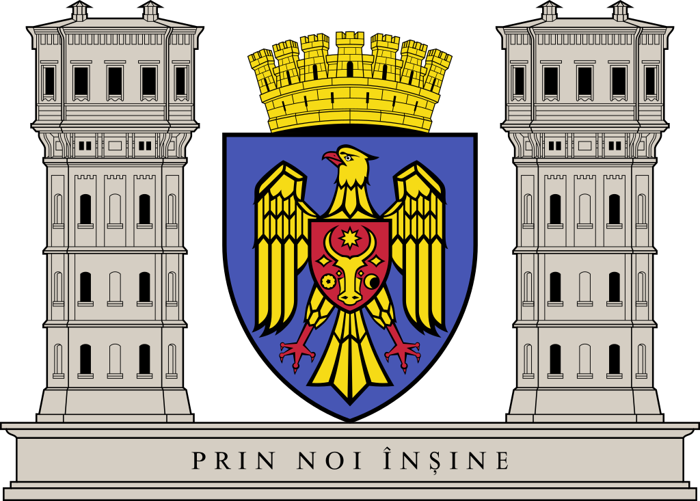
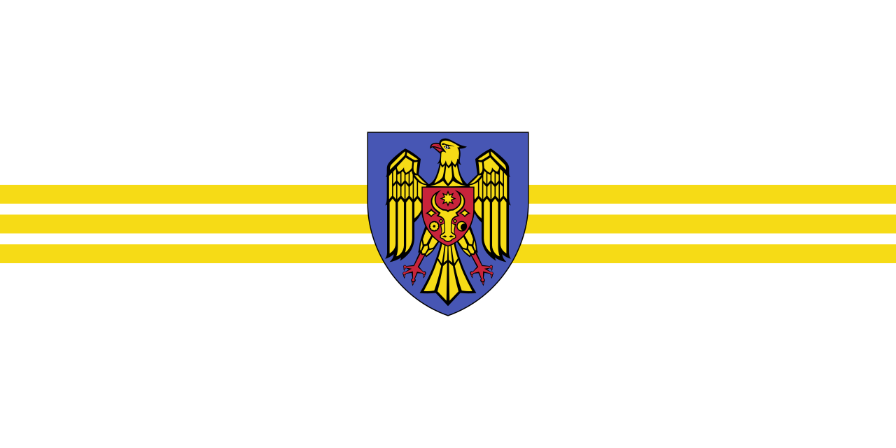

Кишинёв (молд. Chișinău) — столица и крупнейший город Молдавии. Экономический и
культурный центр, расположенный в центре страны на реке Бык. Кишинёв обладает особым статусом в административном
делении Молдавии — он является муниципалитетом. Кроме самого города Кишинёва, в состав одноимённого
муниципалитета входят шесть окрестных городов (Сынджера, Дурлешты, Ватра, Кодру, Вадул-луй-Водэ,
Криково) и двадцать пять сёл, объединённых в тринадцать коммун.
Кишинёв впервые упоминается в грамоте 1436. Статус города получил в 1818 после вхождения в состав
Российской империи, статус муниципалитета — в 1995.


Этимология
Наиболее распространённая версия, отмеченная более 125 лет назад в Новороссийском календаре, относит название города к старомолдавскому названию Кишла ноуэ — «новый хутор». Само слово «кишла» является заимствованием турецкого слова kışla со значением «барак». В Бессарабии это слово употребительно и означает «небольшой посёлок, хутор». Из-за характера образования названия (одна часть тюркская, другая — молдавская) современные исследователи сомневаются в справедливости этой точки зрения.
Изначально топонимы с элементом кишенёв встречаются в документах родом из тех территорий, которые были захвачены тюрками в XV в. и потом в течение нескольких столетий оставались местом концентрации кочевников, поэтому некоторые исследователи предполагают, что название города имеет не романское, а тюркское происхождение. Они считают, что слово произошло от половецкого слова «кишения» (кыпчак. kesene), означавшего «место погребения, мавзолей». Во многих местах, в названии которых находилась составляющая часть кишенёв, например, Кишеньки Оржицкого района Полтавской области Украины, когда-то были внешние признаки древних захоронений — в виде мавзолеев, памятников и надгробий. Такие погребения могли принадлежать печенегам и половцам, обитавшим в Причерноморье в начале II тысячелетия н. э. или же татаро-монголам, занявшим этот край в XIII веке. О существовании в районе современного Кишинёва печенежских погребений свидетельствуют археологические раскопки. Другие версии связывают название с венгерским Kisjenő — «маленький Йено» (Йено — одно из венгерских племён, пришедших в Европу в 896 году). В западной Румынии на границе с Венгрией есть город Кишинеу-Криш (венг. Kisjenő или Chişineu-Criş), но доказательств, подтверждающих связь в происхождении названий этих городов, не найдено.
География
Кишинёв расположен в центральном районе Молдавии на 47°0′ с. ш. и 28°75′ в. д. на высоте 85 м над уровнем моря на Восточно-Европейской равнине. Город стоит на семи холмах и вытянут вдоль реки Бык — правого притока Днестра. Часть Кишинёва по правому берегу Быка занимает надпойменные террасы, разделённые долиной ручья Дурлешты, и несколькими балками (Малая Малина, Большая Малина и разветвлённая Мунчештская балка). Левобережный склон долины Быка состоит из двух террас, первая из которых полого опускается к реке, а вторая расположена на высоте 60—90 м.
Площадь города — около 120 км², а всего муниципия — 571,64 км².
Город расположен в пределах возвышенной лесистой местности Кодр. В почве преобладает чернозём, идеально подходящий для развития сельского хозяйства. Из полезных ископаемых распространён известняк, богатый хорошо сохранившимися окаменелостями. Глубже залегают меловые пески и мергели
Климат
Кишинёв расположен в зоне с довольно мягким, умеренно континентальным климатом с умеренно жарким летом и умеренно мягкой ветреной зимой.
Первые метеорологические измерения, сделанные в городе, относятся к 1884 году. Согласно данным начала XX века, средняя годовая температура воздуха составляла около +10,2 °C, а среднегодовое количество осадков — 468 мм. Согласно данным 1970-х годов, средняя температура января составляла −3,5 °С, июля +21,5 °C.
В течение года насчитывается около 2215 солнечных часов, из них 329 часов в июле и только 54 часа в декабре. Среднегодовая температура составляет +9,6 °C, а уровень осадков — 547 мм/м². Лето начинается в начале мая. Средняя температура составляет +20…+25 °C, а в центре города иногда достигает +35…+40 °C. Дожди редкие, но обильные. Средняя температура января около −3,2 °C, столбик термометра редко опускается ниже отметки в −10 °C. Весной и осенью температура колеблется между +18…+22 °C, осадки более обильные чем летом.
Самая холодная температура в городе была отмечена 20 февраля 1954 года: −28,9 °C, что было ниже нормы
более чем на 20 градусов.
Самая высокая температура зарегистрирована 19 июля 2007 года: +39,4 °C.
Флора
Кишинёв считается одним из самых зелёных городов Европы. Практически на всех улицах города растут деревья и летом город утопает в зелени. В Кишинёве множество скверов и парков, в которых произрастают более 50 видов деревьев, кустарников и лиан, как типичных для Молдавии (тополь, конский каштан, акация, клён, ива, липа, рябина, катальпа, берёза, ель и др.), так и редких видов (кедр, канадский бундук, глициния, виргинский можжевельник). Распространены посадки белой акации, американского клёна, мелколистной липы и вяза. Естественная растительность постепенно сменяется новыми посадками, среди которых чаще всего встречаются конский каштан, платан, софора, клён, декоративные формы черешни. Вокруг озёр и вдоль многих улиц насажены тополя (пирамидальный, канадский, серый, гибридный). В парках и вдоль улиц много зелёных насаждений из самшита, бирючины, спиреи.
Фауна
В парках города живут около 14 видов птиц и 14 видов земноводных. Из млекопитающих в городе встречается ёж, европейский крот, хорёк, куница и летучая мышь. Кроме этого есть белки и полевые мыши. Известны заходы в город лис и зайцев. Среди птиц распространено несколько видов голубей, а также сороки, вороны, сойки, стрижи, скворцы, ласточки, синицы, дятлы и воробьи. В некоторых районах города был замечен на пролёте сапсан. Видовой состав пресмыкающихся и амфибий небогат. Встречаются обыкновенный уж, прыткая ящерица, зелёная жаба, озёрная лягушка, обыкновенный тритон и др. Из насекомых распространены жуки, чешуе-, полужёстко-, двукрылые и другие. Встречаются вредители деревьев и кустарников: тля, щитовка, паутинный клещик, шелкопряд. Иногда появляются в массовом количестве божья коровка, американская белая бабочка
Архитектура
Старейшие здания Кишинёва: Мазаракиевская церковь (1752), Церковь Константина и Елены (1777), Армянская церковь (1803), Благовещенская церковь (1807—1810), Харлампиевская церковь (1812).
После присоединения в 1812 году Бессарабии к России в 1817 году определился центр города, появились первые прямые и широкие улицы. В 1834 году был утверждён генеральный план Кишинёва. Прямоугольная сетка широких улиц соответствовала принципам застройки южных городов Российской империи. В 1831—36 гг. здесь возводятся Кафедральный собор и колокольня. Затем вблизи собора сооружается Триумфальная арка.
Во второй половине XIX века строились учебные и административные здания, применялись элементы византийской, романской и готической архитектуры, а также молдавского зодчества. Большая часть домов по-прежнему оставалась одноэтажной. В 1862 году приступили к мощению улиц. Благоустройству Кишинёва способствовал А. О. Бернардацци. В конце XIX века Кишинёв занимал пространство более 660 десятин, имеющее неправильную фигуру в 5½ вёрст длины и 4 версты ширины. В начале XIX века возводятся здания городской думы (ныне Примэрия), окружного суда (управление железной дороги), городского банка (органный зал), краеведческого музея.
В послевоенные годы по генеральному плану (1947) под руководством А. В. Щусева был реконструирован проспект Ленина, проложены проспект Молодёжи и бульвар Негруцци, построены административные здания, в том числе Дом правительства МССР, застроена Вокзальная площадь. В Кишинёве были созданы новые промышленные районы: Новые Чеканы, Скулянка и др. За 1955—70 гг. выросли жилые районы: Рышкановка, Ботаника, Боюканы и др. Установлены многие памятники. Решающим толчком в развитии города явилось постановление Совмина СССР 1971 года «О мерах по дальнейшему развитию города Кишинёва», когда городу из союзных фондов было выделено около миллиарда рублей. В середине 1980-х годов был объявлен конкурс на лучший проект детальной планировки центра города. Последующий распад Советского Союза помешал претворению в жизнь планов масштабного строительства.
После обретения Молдавией независимости, строительство в Кишинёве приостановилось. Однако со временем начали восстанавливаться церкви, строиться элитные дома с дорогостоящими квартирами и фешенебельные особняки. Была расширена Измаиловская улица, построен автовокзал «Северный», реставрирован железнодорожный вокзал, построены многочисленные магазины и офисные здания. В октябре 2006 года было принято решение об увеличении площади Кишинёва и построении новых секторов (Будешты-2 и Новые Ставчены) с современной инфраструктурой, бизнес-центрами и многочисленными дорожными развязками. Также планировалось в течение семи лет реконструировать проспект Кантемира. Кишинёв также является обладателем самой длинной улицы в Европе — Мунчештского шоссе (молд. Șoseaua Muncești), имеющего протяжённость от Центрального железнодорожного вокзала до Международного Аэропорта Кишинёва.
Население
По итогам переписи 1774 года в Кишинёве проживало 600 семей. Из них: 162 налогоплательщика; 110 семей — русских, молдаван и украинцев (по трети); 52 семьи — армян, евреев, цыган, греков и сербов. Если с 1812 по 1818 годы население Кишинёва выросло с 7 тысяч (600 семейств) до 18 тысяч человек, то к концу века оно увеличилось до 110 тысяч. Население города всегда было многонациональным, а рост численности населения происходил не за счёт естественного прироста, а в основном за счёт миграционных процессов.
Энциклопедический словарь Брокгауза и Ефрона оценивал население Кишинёва с предместьями в 1894 году в 128 218 человек, из которых около 20 % жили в предместьях. Почти половину населения составляли молдаване — 54 890; затем следовали по численности: евреи — 26 120, русские, греки, болгары, румыны, цыгане, армяне, поляки и представители других национальностей. Число домов в Кишинёве в 1788 году было около 300, а в конце XIX века их было до 10 тысяч.
Согласно же первой всеобщей переписи населения Российской империи в 1897 году, население города (без предместий) составляло 108 483 чел., из которых евреев — 49 829 чел. (45,9 %), великороссов (русских) — 29 299 чел., молдаван — 19 081 чел., малороссов (украинцев) — 3393 чел. и др.
В 1910 году в Кишинёве было 127 тысяч жителей, около 10 тысяч домов (всего 4 трёхэтажных дома), 142 улицы и переулка, 12 площадей, 5 садов и скверов. Население в 1897 и 1912 гг. меньше населения 1894 года, так как российские власти в эти годы не учитывали население пригородов Кишинёва.
После присоединения Бессарабии к Румынии в 1918 году численность населения города не увеличивалась, и в июне 1940 года Кишинёв насчитывал 110 тысяч человек.
В 1944 году, после оккупации румынско-германской группировкой, город насчитывал всего 25 тысяч жителей, а к 1950 году в нём было уже 134 тысячи человек. В 1959 году еврейское население Кишинёва составляло 42 900 человек, в 1970 году — 49 900, в 1979 году — 42 400. 1960 год — в Кишинёве 215 тысяч жителей. Интенсивное экономическое и социальное развитие города способствовало миграционной подвижности населения. Причём оно пополнялось как за счёт сельского населения республики (60 %), так и за счёт специалистов, прибывших из других регионов СССР. Приток мигрантов в 1980 году возрос вдвое по сравнению с 1950 годом. Рождение 500-тысячного кишинёвца город отметил 28 мая 1978 года.
После распада СССР численность населения Кишинёва стала сокращаться. Тогда как в 1991 году город насчитывал 676 700 жителей, в начале 2005 года его население составило 589 445 человек.
По данным Бюро Статистики Республики Молдова, на начало 2019 года, население Кишинёва в пределах города составляло 695,4 тысяч, а в пределах муниципия — 832,9 тысяч жителей.